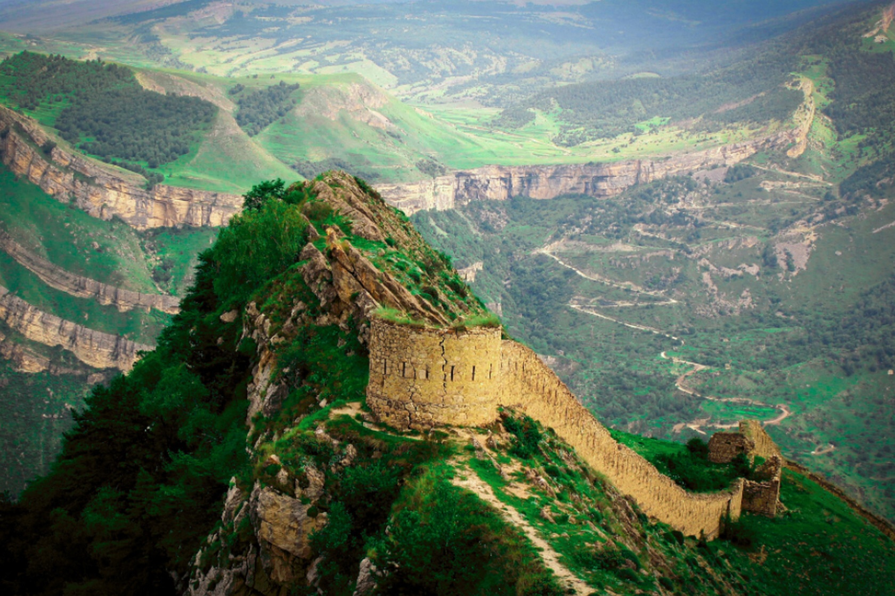
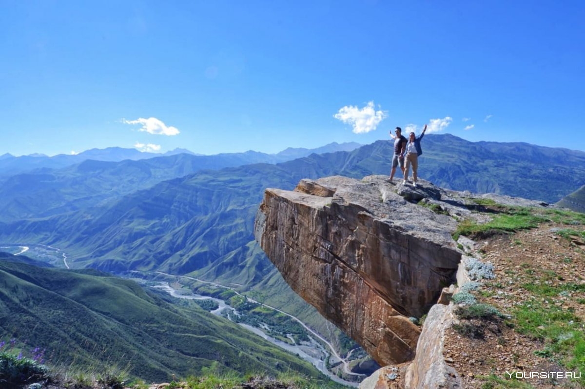

Дагестан – самый многонациональный регион России и чемпион страны по языковому разнообразию. «Кавказский Вавилон» населяют более 60 народностей, а разговаривают местные жители почти на 30 языках. Существует также множество диалектов, и порой дагестанцы, живущие в соседних аулах, просто не понимают друг друга. На помощь приходит русский язык, которым владеет подавляющее большинство граждан. Дагестанцы невероятно гостеприимны, радушны. Навязчивости они не проявляют, но всегда готовы оказать помощь, если предполагают, что человек в ней нуждается.
Туристы могут чувствовать себя в Дагестане в безопасности. Особых запретов для них в республике, где около 96% населения исповедуют ислам, не существует. Но сами местные придерживаются довольно строгих правил. В горных аулах все еще превалирует патриархальное представление о мире. Вместе с тем, именно аулы и горные поселки, разбросанные в невероятно живописных уголках и хранящие древнюю культуру, традиции, – это те места, куда в первую очередь устремляются туристы.
На сравнительно небольшой территории республики сконцентрировано множество природных достопримечательностей.
Здесь обитают редкие животные и птицы, в изобилии произрастают эндемики. «Ботанический сад», «географическая лаборатория», «геологический музей», «зоопарк» – это лишь краткий перечень эпитетов, которых удостоился Дагестан в литературе и рекламных проспектах.
Неотъемлемой частью местных ландшафтов являются остатки крепостей, стен, башен, формировавших в древности единую
фортификационную линию, которая защищала прибрежные долины от кочевых племен.
Эти живописные руины можно увидеть в окрестностях старинных аулов, на горных перевалах и в ущельях.
Столица Дагестана, Махачкала, расположена на побережье Каспийского моря.
На его берегу стоят также легендарный Дербент, Каспийск и курортный городок Избербаш.
В прибрежных городах и их окрестностях выстроены отели, путешественников принимают санатории, турбазы.
В горных же районах туристы, как правило, останавливаются в гостевых домах.
На территории современного Дагестана первобытные люди появились еще в эпоху раннего каменного века.
Возникновение здесь первого государства относится предположительно к VI веку до н. э.
Оно называлось Албанией, но позже к топониму добавили уточнение – «Кавказская», чтобы избежать отождествления с одноимённой страной на Балканах.
Территория Кавказской Албании изначально охватывала южные области современного Дагестана и часть Азербайджана, но с течением времени границы изменялись.
Это государство представляло собой объединение 26 племен, в числе которых были предки лезгиноязычных народов нахско-дагестанской семьи. В прошлом во многих странах этнонимом, близким к слову «лезгин», часто называли всех дагестанцев.
Учитывая, что в аулах проживают преимущественно мусульмане,
путешественникам возбраняется употреблять алкогольные напитки в горных районах.
Также нужно позаботиться о дресс-коде, захватив с собой одежду, прикрывающую плечи, руки и ноги выше колен.
Популярны в Дагестане и рафтинг-туры по горным рекам.
За 3-дневное путешествие потребуется заплатить порядка 25 000 рублей с человека.
В стоимость входит проживание в гостинице, 3-разовое питание, трансфер, инструктаж, сплав по реке.
